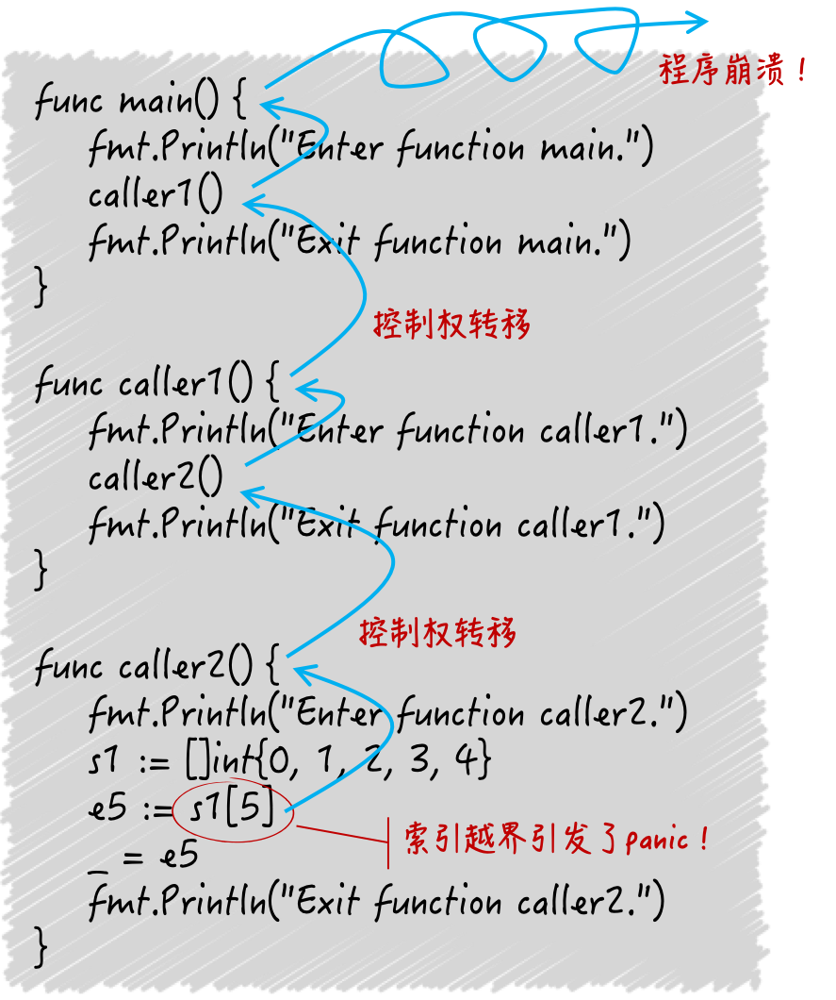

- 00 导读 写给0基础入门的Go语言学习者.md.html
- 00 导读 学习专栏的正确姿势.md.html
- 00 开篇词 跟着学，你也能成为Go语言高手.md.html
- 01 工作区和GOPATH.md.html
- 02 命令源码文件.md.html
- 03 库源码文件.md.html
- 04 程序实体的那些事儿（上）.md.html
- 05 程序实体的那些事儿（中）.md.html
- 06 程序实体的那些事儿 （下）.md.html
- 07 数组和切片.md.html
- 08 container包中的那些容器.md.html
- 09 字典的操作和约束.md.html
- 10 通道的基本操作.md.html
- 11 通道的高级玩法.md.html
- 12 使用函数的正确姿势.md.html
- 13 结构体及其方法的使用法门.md.html
- 14 接口类型的合理运用.md.html
- 15 关于指针的有限操作.md.html
- 16 go语句及其执行规则（上）.md.html
- 17 go语句及其执行规则（下）.md.html
- 18 if语句、for语句和switch语句.md.html
- 19 错误处理（上）.md.html
- 20 错误处理 （下）.md.html
- 21 panic函数、recover函数以及defer语句 （上）.md.html
- 22 panic函数、recover函数以及defer语句（下）.md.html
- 23 测试的基本规则和流程 （上）.md.html
- 24 测试的基本规则和流程（下）.md.html
- 25 更多的测试手法.md.html
- 26 sync.Mutex与sync.RWMutex.md.html
- 27 条件变量sync.Cond （上）.md.html
- 28 条件变量sync.Cond （下）.md.html
- 29 原子操作（上）.md.html
- 30 原子操作（下）.md.html
- 31 sync.WaitGroup和sync.Once.md.html
- 32 context.Context类型.md.html
- 33 临时对象池sync.Pool.md.html
- 34 并发安全字典sync.Map （上）.md.html
- 35 并发安全字典sync.Map (下).md.html
- 36 unicode与字符编码.md.html
- 37 strings包与字符串操作.md.html
- 38 bytes包与字节串操作（上）.md.html
- 39 bytes包与字节串操作（下）.md.html
- 40 io包中的接口和工具 （上）.md.html
- 41 io包中的接口和工具 （下）.md.html
- 42 bufio包中的数据类型 （上）.md.html
- 43 bufio包中的数据类型（下）.md.html
- 44 使用os包中的API （上）.md.html
- 45 使用os包中的API （下）.md.html
- 46 访问网络服务.md.html
- 47 基于HTTP协议的网络服务.md.html
- 48 程序性能分析基础（上）.md.html
- 49 程序性能分析基础（下）.md.html
- 尾声 愿你披荆斩棘，所向无敌.md.html
- 新年彩蛋 完整版思考题答案.md.html
- 捐赠
21 panic函数、recover函数以及defer语句 （上）
我在上两篇文章中，详细地讲述了Go语言中的错误处理，并从两个视角为你总结了错误类型、错误值的处理技巧和设计方式。
在本篇，我要给你展示Go语言的另外一种错误处理方式。不过，严格来说，它处理的不是错误，而是异常，并且是一种在我们意料之外的程序异常。
前导知识：运行时恐慌panic
这种程序异常被叫做panic，我把它翻译为运行时恐慌。其中的“恐慌”二字是由panic直译过来的，而之所以前面又加上了“运行时”三个字，是因为这种异常只会在程序运行的时候被抛出来。
我们举个具体的例子来看看。
比如说，一个Go程序里有一个切片，它的长度是5，也就是说该切片中的元素值的索引分别为0、1、2、3、4，但是，我在程序里却想通过索引5访问其中的元素值，显而易见，这样的访问是不正确的。
Go程序，确切地说是程序内嵌的Go语言运行时系统，会在执行到这行代码的时候抛出一个“index out of range”的panic，用以提示你索引越界了。
当然了，这不仅仅是个提示。当panic被抛出之后，如果我们没有在程序里添加任何保护措施的话，程序（或者说代表它的那个进程）就会在打印出panic的详细情况（以下简称panic详情）之后，终止运行。
现在，就让我们来看一下这样的panic详情中都有什么。
panic: runtime error: index out of range
goroutine 1 [running]:
main.main()
/Users/haolin/GeekTime/Golang_Puzzlers/src/puzzlers/article19/q0/demo47.go:5 +0x3d
exit status 2
这份详情的第一行是“panic: runtime error: index out of range”。其中的“runtime error”的含义是，这是一个runtime代码包中抛出的panic。在这个panic中，包含了一个runtime.Error接口类型的值。runtime.Error接口内嵌了error接口，并做了一点点扩展，runtime包中有不少它的实现类型。
实际上，此详情中的“panic：”右边的内容，正是这个panic包含的runtime.Error类型值的字符串表示形式。
此外，panic详情中，一般还会包含与它的引发原因有关的goroutine的代码执行信息。正如前述详情中的“goroutine 1 [running]”，它表示有一个ID为1的goroutine在此panic被引发的时候正在运行。
注意，这里的ID其实并不重要，因为它只是Go语言运行时系统内部给予的一个goroutine编号，我们在程序中是无法获取和更改的。
我们再看下一行，“main.main()”表明了这个goroutine包装的go函数就是命令源码文件中的那个main函数，也就是说这里的goroutine正是主goroutine。再下面的一行，指出的就是这个goroutine中的哪一行代码在此panic被引发时正在执行。
这包含了此行代码在其所属的源码文件中的行数，以及这个源码文件的绝对路径。这一行最后的+0x3d代表的是：此行代码相对于其所属函数的入口程序计数偏移量。不过，一般情况下它的用处并不大。
最后，“exit status 2”表明我的这个程序是以退出状态码2结束运行的。在大多数操作系统中，只要退出状态码不是0，都意味着程序运行的非正常结束。在Go语言中，因panic导致程序结束运行的退出状态码一般都会是2。
综上所述，我们从上边的这个panic详情可以看出，作为此panic的引发根源的代码处于demo47.go文件中的第5行，同时被包含在main包（也就是命令源码文件所在的代码包）的main函数中。
那么，我的第一个问题也随之而来了。我今天的问题是：从panic被引发到程序终止运行的大致过程是什么？
这道题的典型回答是这样的。
我们先说一个大致的过程：某个函数中的某行代码有意或无意地引发了一个panic。这时，初始的panic详情会被建立起来，并且该程序的控制权会立即从此行代码转移至调用其所属函数的那行代码上，也就是调用栈中的上一级。
这也意味着，此行代码所属函数的执行随即终止。紧接着，控制权并不会在此有片刻的停留，它又会立即转移至再上一级的调用代码处。控制权如此一级一级地沿着调用栈的反方向传播至顶端，也就是我们编写的最外层函数那里。
这里的最外层函数指的是go函数，对于主goroutine来说就是main函数。但是控制权也不会停留在那里，而是被Go语言运行时系统收回。
随后，程序崩溃并终止运行，承载程序这次运行的进程也会随之死亡并消失。与此同时，在这个控制权传播的过程中，panic详情会被逐渐地积累和完善，并会在程序终止之前被打印出来。
问题解析
panic可能是我们在无意间（或者说一不小心）引发的，如前文所述的索引越界。这类panic是真正的、在我们意料之外的程序异常。不过，除此之外，我们还是可以有意地引发panic。
Go语言的内建函数panic是专门用于引发panic的。panic函数使程序开发者可以在程序运行期间报告异常。
注意，这与从函数返回错误值的意义是完全不同的。当我们的函数返回一个非nil的错误值时，函数的调用方有权选择不处理，并且不处理的后果往往是不致命的。
这里的“不致命”的意思是，不至于使程序无法提供任何功能（也可以说僵死）或者直接崩溃并终止运行（也就是真死）。
但是，当一个panic发生时，如果我们不施加任何保护措施，那么导致的直接后果就是程序崩溃，就像前面描述的那样，这显然是致命的。
为了更清楚地展示答案中描述的过程，我编写了demo48.go文件。你可以先查看一下其中的代码，再试着运行它，并体会它打印的内容所代表的含义。
我在这里再提示一点。panic详情会在控制权传播的过程中，被逐渐地积累和完善，并且，控制权会一级一级地沿着调用栈的反方向传播至顶端。
因此，在针对某个goroutine的代码执行信息中，调用栈底端的信息会先出现，然后是上一级调用的信息，以此类推，最后才是此调用栈顶端的信息。
比如，main函数调用了caller1函数，而caller1函数又调用了caller2函数，那么caller2函数中代码的执行信息会先出现，然后是caller1函数中代码的执行信息，最后才是main函数的信息。
goroutine 1 [running]:
main.caller2()
/Users/haolin/GeekTime/Golang_Puzzlers/src/puzzlers/article19/q1/demo48.go:22 +0x91
main.caller1()
/Users/haolin/GeekTime/Golang_Puzzlers/src/puzzlers/article19/q1/demo48.go:15 +0x66
main.main()
/Users/haolin/GeekTime/Golang_Puzzlers/src/puzzlers/article19/q1/demo48.go:9 +0x66
exit status 2

（从panic到程序崩溃）
好了，到这里，我相信你已经对panic被引发后的程序终止过程有一定的了解了。深入地了解此过程，以及正确地解读panic详情应该是我们的必备技能，这在调试Go程序或者为Go程序排查错误的时候非常重要。
总结
最近的两篇文章，我们是围绕着panic函数、recover函数以及defer语句进行的。今天我主要讲了panic函数。这个函数是专门被用来引发panic的。panic也可以被称为运行时恐慌，它是一种只能在程序运行期间抛出的程序异常。
Go语言的运行时系统可能会在程序出现严重错误时自动地抛出panic，我们在需要时也可以通过调用panic函数引发panic。但不论怎样，如果不加以处理，panic就会导致程序崩溃并终止运行。
思考题
一个函数怎样才能把panic转化为error类型值，并将其作为函数的结果值返回给调用方？
© 2019 - 2023 Liangliang Lee. Powered by gin and hexo-theme-book.